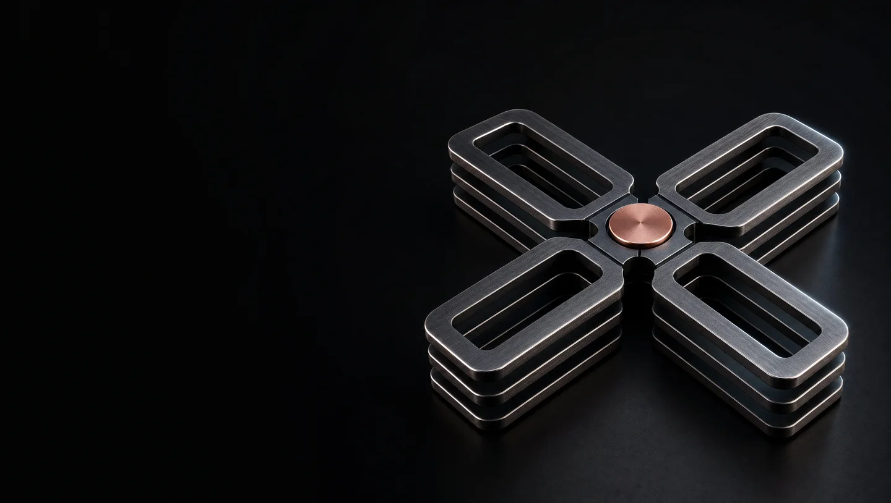

Material and motion.
These assets provide visual atmosphere. They do not represent product screens or historical work.
Selected film
This model-rendered film preserves the exact four-layer geometry. It remains the site asset.
Generated film candidate
The generated film adds a layer during motion. It does not pass the geometry check. Native controls support comparison.
Alternate structure concept
This image changes the model shape. Keep it outside the final site until the visual direction changes.

Source requirements
Real product screens, portrait, event photos, and resume still need source files. Generated images will not replace them.